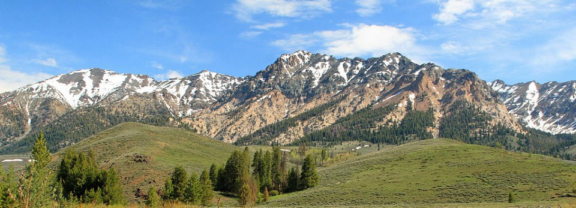

Welcome to the High Country
Since 1991, High Country Weather has been proud to bring you accurate and up to date weather facts across Southwest Idaho.
We serve the beautiful cities of Preston, Soda Springs, Fish Haven and their surrounding communities.
Thank you for visiting us in the mountains!

High Country Weather
70 W Oneida
Preston, ID 83263
📞 999.999.9999
📧 HCWeather@hcw.com